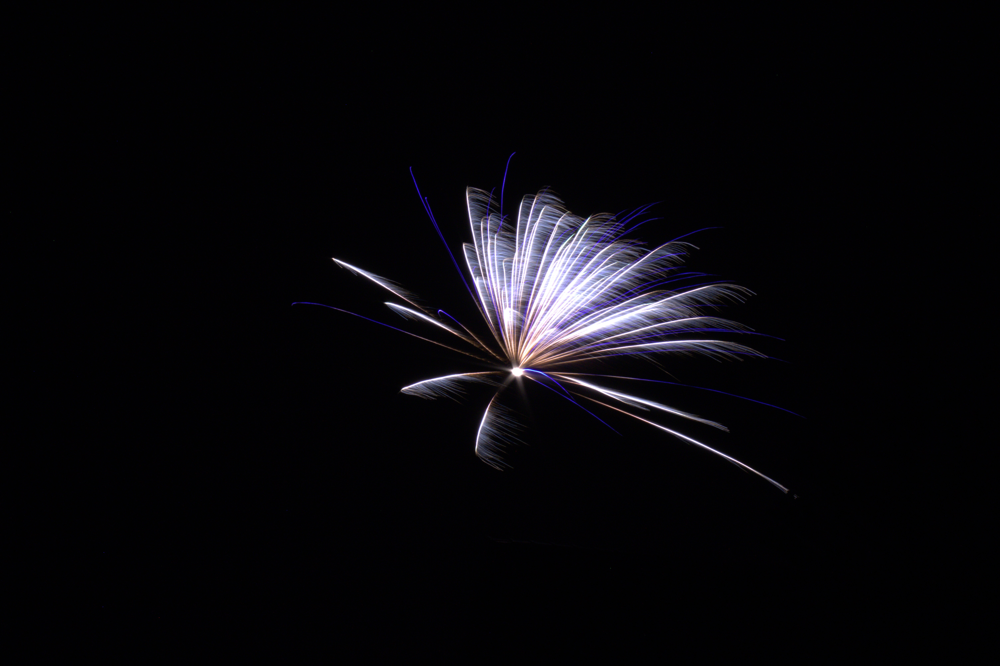

<ion-header [translucent]="true">
  <ion-toolbar>
    <ion-title>
      Gallerie
    </ion-title>
    <ion-buttons slot="end">
      <ion-button> <ion-icon name="settings" size="large"></ion-icon> </ion-button>
    </ion-buttons>
  </ion-toolbar>
</ion-header>

<ion-content [fullscreen]="true">
  <ion-fab slot="fixed" vertical="bottom" horizontal="end">
    <ion-fab-button>
      <ion-icon name="list-outline"></ion-icon>
      <!--TODO: if Liste oder Bild Ansicht-->
      <!-- <ion-icon name="images-outline"></ion-icon> -->
    </ion-fab-button>
  </ion-fab>

  <ion-header collapse="condense">
    <ion-toolbar>
      <ion-title size="large">Gallerie</ion-title>
    </ion-toolbar>
  </ion-header>

  <ion-grid>
    <ion-row>
      <ion-col>
        
      </ion-col>
      <ion-col>
        
      </ion-col>
    </ion-row>
    <ion-row>
      <ion-col>
        
      </ion-col>
      <ion-col>
        
      </ion-col>
    </ion-row>
  </ion-grid>

  <!-- bei Listenauswahl
  <ion-list>
    <ion-item>
      test.jpg
    </ion-item>
    <ion-item>
      test.jpg
    </ion-item>
    <ion-item>
      test.jpg
    </ion-item>
  </ion-list>
  -->

</ion-content>
